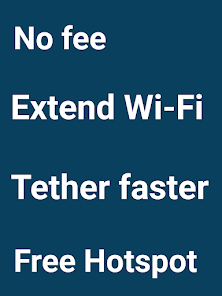
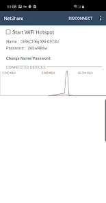

NetShare 为什么不需要 Root 就能开热点？WiFi Direct 背后的设计巧思
NetShare 用公开 API 绕过系统热点的运营商管控，把 WiFi Direct 从"点对点传输工具"改造成伪接入点——背后是一场关于 API 可见性和网络层转发的精巧工程。
一个反直觉的问题
我第一次在它的官网上看到 NetShare 的时候，脑子里蹦出来的不是"又一个热点工具"，而是一个技术上很反直觉的问题：为什么 Android 系统不让你开热点（运营商限流、ROM 屏蔽、信号切换），一个普通应用却能？
按常理，创建 WiFi 热点是操作系统级别的权限——你得改系统服务、注册 DHCP 服务器、管理网络接口。这些操作在 Android 的沙箱模型里本该归 System 进程独占。但 NetShare 偏就能，而且不需要 Root、不需要 Magisk、不需要任何系统级 patch。
它到底钻了什么空子？
核心答案：WiFi Direct 的 Group Owner
NetShare 的全部巧思，可以浓缩成一个 Android API 的名字：WifiP2pManager。
这个 API 从 Android 4.0 开始就是 Google 公开给第三方应用的。它的设计初衷是让应用之间能直接建立点对点连接——Android Beam 传文件、WiDi 屏幕镜像、Nearby Share 都是跑在这套 P2P 框架上。但 Google 在设计时可能没预料到：P2P 框架里有个角色叫 Group Owner（GO），这个角色的行为，和一个 WiFi 接入点几乎一模一样。
我把它的核心机制拆解一下：
角色协商与网络组建
WiFi Direct 的设备发现流程里，两台设备会通过 P2P Group Owner Negotiation 握手协议来"抢"GO 的角色。谁赢了谁就是 GO，相当于一个虚拟路由器——负责分配 IP、维护拓扑、广播 SSID。输了的那台就乖乖当 Client，扫描 SSID、输密码、连进来。
关键就在这里：GO 创建出来的 P2P 网络，对 Client 端来说就是一个普通的 WiFi 网络。笔记本扫到 SSID、输 WPA2 密码、连上——和连家里路由器没有任何区别。
那个"神奇"的 192.168.49.1
你可能注意过，NetShare 创建的网络里，网关永远是 192.168.49.1，端口永远是 8282。这不是作者拍脑袋选的，而是 WiFi Direct 规范里的硬约定：
- 192.168.49.1 是 WiFi Alliance 在 P2P 标准里预留给 GO 的默认 IP 段起点，几乎所有 Android 实现都遵循这个约定，所以你改也没用
- 8282 是 NetShare 自己 HTTP 代理进程的硬编码端口——没有选项让你改，如果被别的应用占了（比如 VPN、抓包工具），NetShare 会直接启动失败——详细的端口冲突排查步骤可以在NetShare文档里找到
对比一下 Android 系统热点的默认网段是 192.168.43.x，这两个网段的差异，恰恰反映了它们在系统内部走的是完全不同的代码路径：系统热点走隐藏 API WifiManager.setWifiApEnabled()（Android 12+ 已白名单管控），而 NetShare 走的是公开 API WifiP2pManager.createGroup()——运营商配置（Carrier Config）根本管不到 P2P 这条链路。
为什么还需要 HTTP 代理？P2P 网络本身不能直接转发流量吗？
这是 NetShare 设计里第二精妙的地方，也是最容易被用户误解的地方。
如果 P2P 网络本身就是一个能路由的子网，那 NetShare 只需要做 NAT 转发就行了——Client 的流量进来，GO 转给外部网络。但问题是：Android 的 P2P 框架只负责创建网络，不负责路由。WifiP2pManager 创建 GO 之后，Android 系统并不会自动帮你做网络地址转换，P2P 网络内的 Client 就是个孤岛。
所以 NetShare 自己实现了一层 HTTP 代理：
- P2P GO 把 Client 连进来，分配
192.168.49.x的 IP - NetShare 在 GO 上跑一个 HTTP 代理服务（监听 8282）
- Client 端手动配置 HTTP 代理指向
192.168.49.1:8282 - 所有出站流量都先到 NetShare 的代理进程，再由它转给手机自己的蜂窝/WiFi 网络
这就是为什么很多人第一次用 NetShare 会踩坑——以为连了 SSID 就有网，结果 WiFi 图标带感叹号。这不是 NetShare 的 bug，是对它技术原理的误解。普通系统热点做的事情是"创建网络 + 自动 NAT 路由"，而 NetShare 只做了"创建网络"，路由这层推给了 HTTP 代理。

这套设计的代价
没有免费的午餐。想试试的话直接去下载拿安装包，不需要任何折腾。NetShare 能绕过系统热点的种种限制，是因为它走了一条"非主流"的技术路径，这条路径有四个内在的限制是绕不开的：
单频段运行。 P2P Group 只能在 2.4GHz 或 5GHz 其中一个频段上工作，无法同时双频。系统热点可以双频并发，NetShare 不行——因为 P2P 框架本身就是单频段设计的。
并发设备上限低。 WiFi Direct 规范理论上支持 255 个 Client，但 Android 的实际实现里，GO 的并发连接数通常在 10~20 个，取决于手机芯片组。做临时共享完全够，但如果你想把它当办公室路由器用，很快就会遇到瓶颈。
耗电是系统热点的 3~5 倍。 GO 角色下 WiFi 芯片持续高功率发射，加上 HTTP 代理进程一直在跑，电池消耗比普通使用快得多。文档里提到一个典型场景：一台中端手机开 NetShare 热点 2 小时，电池从 80% 掉到 30%。
HTTP 代理的适配成本。 不是所有应用都愿意走系统 HTTP 代理。有些 App（游戏、P2P 下载工具）会直接绕过代理连接 TCP 端口，这部分流量 NetShare 就转发不了——表现就是"浏览器能用但游戏连不上"。
这个设计意味着什么
从技术选型的角度看，NetShare 的取舍非常清晰：
- 它追求的是最大兼容性和最少系统侵入——公开 API、无 Root、无系统 patch，代价就是 HTTP 代理这一层的适配成本
- 它瞄准的是临时场景：运营商偷偷关掉热点功能的手机、出差住酒店需要给多个设备共享一个 WiFi、车载场景下把手机变成临时网关
我试过在一台被运营商屏蔽了系统热点的红米手机上用 NetShare——系统热点按钮一点就弹"运营商限制"，NetShare 却能正常创建 P2P 网络，笔记本连上配好代理就能上网。那一刻你能清晰感受到两个技术路径的差异：系统热点是厂商和运营商管控的"正规军"，NetShare 走的是 WiFi Direct 这条"野路子"——但野路子恰恰是它能存活的原因。

如果你愿意花点时间理解它的工作原理（特别是那个 HTTP 代理为什么必须配），NetShare 是个相当靠谱的工具。它不是完美的，但它在"不 Root 的 Android 设备上做网络共享"这个细分场景里，找到了一个技术上几乎无懈可击的切入点——利用 WiFi Direct 的设计初衷来做一件设计初衷之外的事，这本身就是工程趣味的一部分。这些技术细节对应的参考资料，我在GitHub、Gitee、GitCode三个平台上都同步了一份，方便国内网络环境下随时查阅。